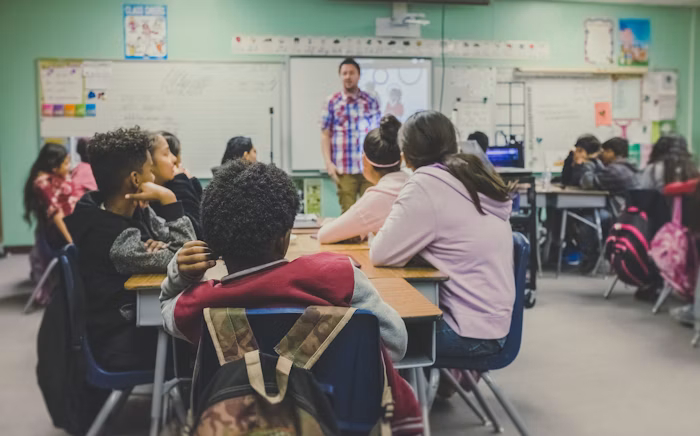
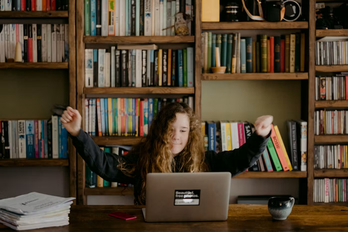
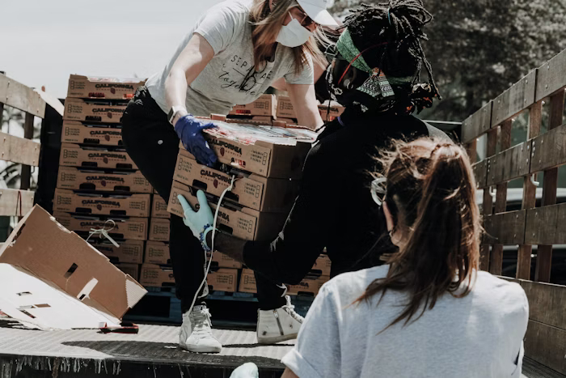
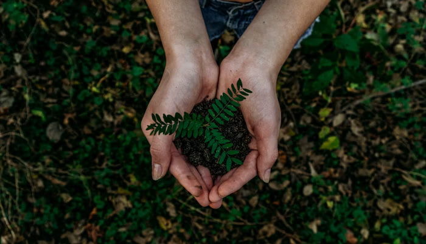

Educação para o Futuro
Oferecemos recursos e atividades para desenvolver habilidades e ampliar oportunidades de jovens e adultos.
EducaçãoConheça iniciativas que buscam transformar realidades e criar novas oportunidades.
Cada projeto nasce de uma necessidade e cresce com a participação da comunidade.

Oferecemos recursos e atividades para desenvolver habilidades e ampliar oportunidades de jovens e adultos.
Educação
Capacitamos pessoas para o uso de tecnologias, facilitando o acesso a serviços, estudos e oportunidades de trabalho.
Tecnologia
Distribuímos alimentos, itens básicos e oferecemos suporte para famílias em situação de vulnerabilidade.
Assistência Social
Promovemos ações de cuidado com o meio ambiente e incentivamos práticas sustentáveis nas comunidades.
Meio AmbienteSeja voluntário, apoie nossos projetos ou faça uma doação.